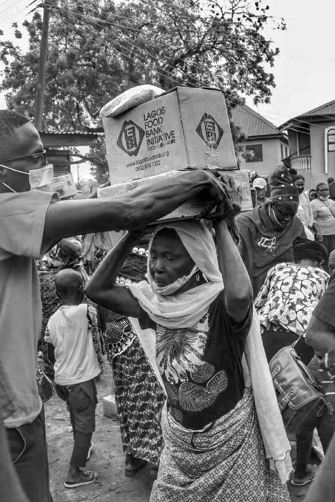

Namaste to the people who have put their precious time in scanning this QR code or open this link.
I am Samvit, a resident of Amruthnagar who is studying in Delhi Public School Bangalore North. I am trying to make an effort of helping the children who are diagnosed with cancer or any other serious diseases.
These funds are going to the Make-A-Wish charity in India. I want you to think about the reactions on these children’s faces if their wishes are granted. In some cases the granting of wishes makes them healthier. If you think these children do deserve their wishes to be granted you can donate up to your limit if possible.

Many children around the world are diagnosed with serious illnesses such as cancer and other life-threatening diseases. Because of this, they often have to go through long hospital stays, difficult treatments, and many challenges at a very young age. These experiences can take away a lot of the normal joys of childhood. During such times, even small moments of happiness can make a big difference. When children are given something to look forward to, it can help them stay positive and strong while going through treatment. This initiative is meant to support organizations like the Make-AWish Foundation, which work to grant special wishes for children with critical illnesses. These wishes may be simple dreams the children have, such as meeting someone they admire, visiting a place they have always wanted to see, or experiencing something they have always hoped for. By supporting this cause, people can help bring joy and encouragement to children who are facing very difficult situations. Even small contributions can help create meaningful moments of happiness for them and their families.
People can help by donating any amount they are comfortable with. Even small contributions can make a big difference in fulfilling the wishes of children who are going through difficult medical treatments.
If you would like to support this cause, you can donate using the link below. Every contribution helps bring joy and hope to children fighting serious illnesses.
When donating through Fueladream, donors may be asked to provide their PAN number because of financial and legal requirements in India. The PAN helps the platform maintain transparency and accurate records of donations. It is also important for issuing official donation receipts, especially when the charity is eligible for tax benefits under Section 80G of the Income Tax Act. In such cases, donors can use the receipt to claim tax deductions, and the PAN helps verify their identity for this purpose. Additionally, collecting PAN details helps ensure compliance with regulations set by the Income Tax Department of India. These rules are meant to prevent financial fraud and ensure that all donations are properly tracked and reported through legitimate channels.